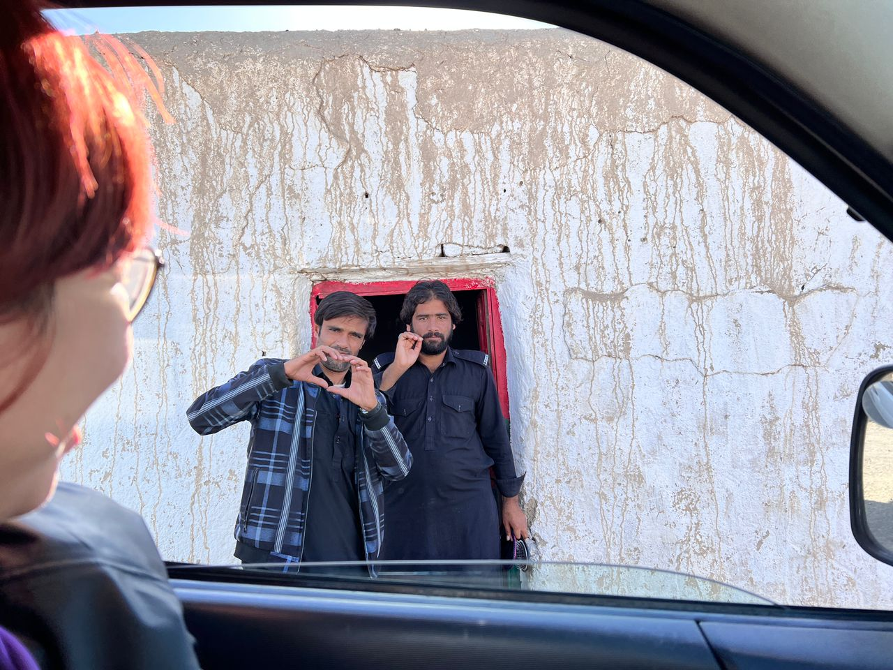
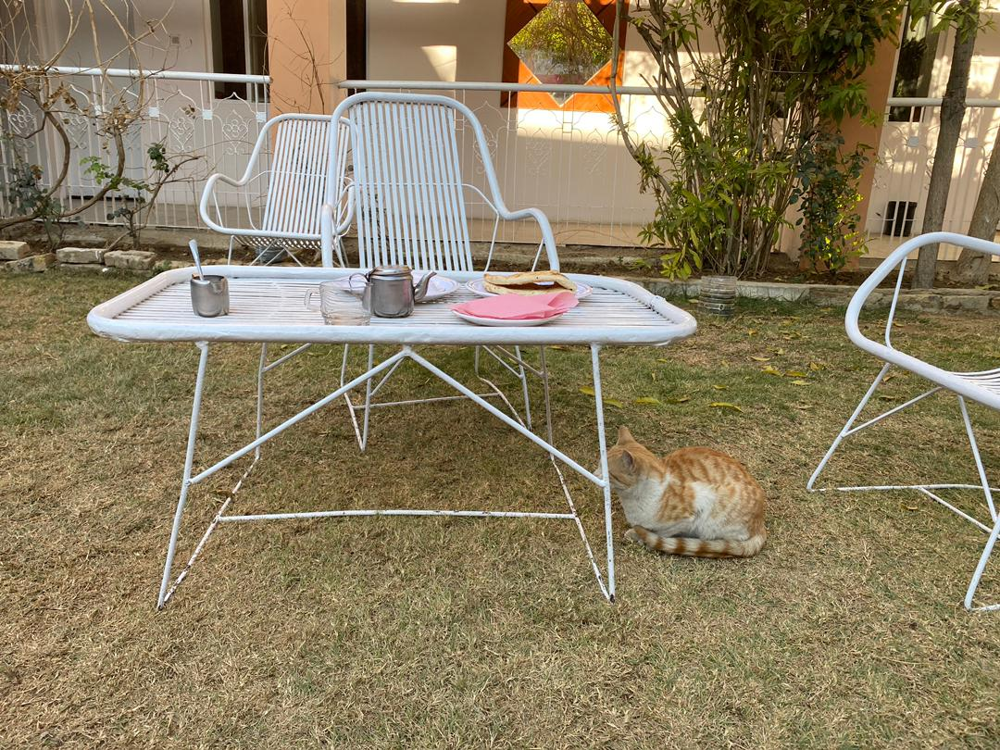
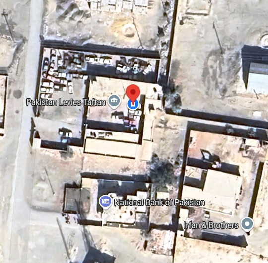

Real Story · 中文
这不是普通住宿，而是进入 Iran 前的一段 controlled road。
24/12/2023 到 25/12/2023，我住在 Quetta 的 Bloom Star Hotel。 对很多准备从 Pakistan 去 Iran 的 overlanders 来说，这里是一个常见的等候点。 人和车在这里等 levies escort 的安排，然后才继续往 Iran border 前进。
26/12/2023，我们离开 hotel，开始进入 levies escort 的节奏。 当晚住在 levies quarter / control quarter。 从 Quetta 往 Iran border 这一段，不是普通自由自驾路段， 而是一段由不同 levies teams 一段一段交接的 controlled road。
27/12/2023，我们到达靠近 border 的区域，并住在 police quarter / Taftan side。 到了这种地方，旅程变得很实际：等、登记、交接、被带路、再等。
28/12/2023，我终于成功离开 Pakistan，进入 Iran。 Passport 上可以看到 Pakistan 的 exit custom stamp。 但是 Iran 的 entry stamp 没有盖在 passport 上，而是盖在另外一张 paper 上。 当时 official 有问我要不要盖在 passport 上，也提醒我未来可能面对的不方便。 所以我选择把 Iran IN stamp 盖在 paper 上。

Road Companions · Chinese Couple
The couple who became important after the border.
At Bloom Star Hotel, Tuzi met a Chinese couple travelling the world by public transport. They said they might later buy a motorcycle in Georgia. Because they were heading the same route toward Iran, levies arranged for them to sit inside Toyotaki.
This helped them avoid repeatedly loading and unloading luggage into different levies vehicles, because from Quetta to the Iran border, the escort could involve many team transfers across one or two days.
Later, the Chinese couple became important in another way. They had a contact in Zahedan. After entering Iran on 28/12/2023, Tuzi parked downstairs at that contact’s place and slept soundly there from 28/12/2023 to 03/01/2024 while waiting for the Iran travel card and insurance.
Levies Control Quarter
The love sign from the escort road.
At one levies control quarter, the officers made a love sign toward Tuzi and the Chinese girl. Tuzi joked that without the beautiful young Chinese girl, maybe nobody would have bothered giving her that much attention.
But the photo still became part of the memory: in a route usually described by escort procedure and security, there were also funny, human, slightly awkward, and warm moments.


English Memory Summary
Hotel, levies quarter, police quarter, then Iran.
Tuzi stayed at Bloom Star Hotel in Quetta from 24/12/2023 to 25/12/2023. On 26/12/2023, she entered the levies escort system and stayed at a levies quarter. On 27/12/2023, she reached the border area and stayed at a police quarter near Taftan. On 28/12/2023, she exited Pakistan and entered Iran.
The Pakistan exit stamp appeared in her passport, while the Iran entry stamp was placed on a separate paper after officials explained the possible future inconvenience of having an Iran stamp in the passport.
The Chinese couple she met in Quetta also became important after the border: their Zahedan contact gave Tuzi a place to park downstairs and sleep safely while waiting for her Iran travel card and insurance.
Heart Statement
在 controlled road 里，陌生人也会变成路线的一部分。
Quetta 到 Iran border 的路，不只是地图上的一条线。 它是一段等待、escort、quarter、transfer、border paper、还有陌生旅人互相借路的记忆。
On the escorted road, Toyotaki was not only my campervan. For a while, it became a small shelter for other travellers too.